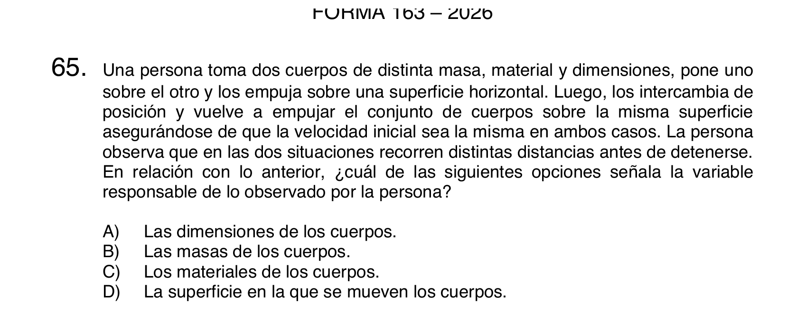

En el ejercicio anterior, ¿con qué velocidad llega la piedra al suelo?
Ya encontramos \(t=3\,\mathrm{s}\).
Fórmula inicial:
\(v(t)=v_0+at\)
\(v=0+(-10)(3)\)
\(v=-30\,\mathrm{m/s}\)
El signo negativo indica que llega moviéndose hacia abajo.
Lanzamiento vertical
Sube, se detiene un instante y baja
Mientras sube, \(v>0\) pero disminuye.
En la altura máxima, \(v=0\).
Mientras baja, \(v<0\) y su rapidez aumenta.
La aceleración es \(-g\) todo el tiempo.
Ejercicio 4
Tiempo hasta la altura máxima
Una pelota se lanza verticalmente hacia arriba con \(v_0=20\,\mathrm{m/s}\). Usa \(g=10\,\mathrm{m/s^2}\). ¿Cuánto tarda en llegar a su altura máxima?
En la altura máxima la velocidad es cero.
Fórmula inicial:
\(v=v_0+at\)
\(0=20-10t\)
\(10t=20\)
\(t=2\,\mathrm{s}\)
Ejercicio 5
Altura máxima
Con los mismos datos: \(v_0=20\,\mathrm{m/s}\), \(a=-10\,\mathrm{m/s^2}\), \(t=2\,\mathrm{s}\). ¿Qué altura máxima alcanza respecto del punto de lanzamiento?
Fórmula inicial:
\(y=y_0+v_0t+\frac12at^2\)
Pasamos \(y_0\) restando al lado izquierdo:
\(y-y_0=v_0t+\frac12at^2\)
Definimos el cambio de altura:
\(\Delta y=y-y_0\)
\(\Delta y=v_0t+\frac12at^2\)
\(\Delta y=20(2)+\frac12(-10)(2)^2\)
\(\Delta y=40-20\)
\(\Delta y=20\,\mathrm{m}\)
Ejercicio 6
Tiempo total de vuelo
La pelota vuelve al mismo nivel desde el cual fue lanzada. Con \(v_0=20\,\mathrm{m/s}\) y \(g=10\,\mathrm{m/s^2}\), determina el tiempo total de vuelo.
Al volver al mismo nivel, \(\Delta y=0\).
Fórmula inicial:
\(y=y_0+v_0t+\frac12at^2\)
\(y-y_0=v_0t+\frac12at^2\)
\(\Delta y=v_0t+\frac12at^2\)
\(0=20t+\frac12(-10)t^2\)
\(0=20t-5t^2\)
Forma factorizada:
\(0=t(20-5t)\)
\(t=0\quad\text{o}\quad 20-5t=0\)
\(t=0\quad\text{o}\quad t=4\,\mathrm{s}\)
La ecuación general da lo mismo: \(5t^2-20t+0=0\).
Fuente: DEMRE, PAES Regular Ciencias - Física, Proceso de Admisión 2024, Forma 163, pregunta 65. Recorte realizado desde el PDF oficial.
Resolución
Lectura de tabla: no inventar relaciones
Para \(25\,\mathrm{cm^2}\), los tiempos son \(10{,}55\) y \(9{,}45\) s.
Para \(100\,\mathrm{cm^2}\), los tiempos son \(9{,}90\) y \(10{,}10\) s.
Para \(75\,\mathrm{cm^2}\), los tiempos son \(10{,}03\) y \(9{,}97\) s.
Todos los promedios están alrededor de \(10\,\mathrm{s}\).
La variable que cambia es el área de contacto.
El tiempo promedio no cambia apreciablemente con el área.
Respuesta: C.
DEMRE literal
Ejercicio oficial: distancia hasta detenerse

Fuente: DEMRE, PAES Regular Ciencias - Física, Proceso de Admisión 2026, Forma 163, pregunta 65. Recorte realizado desde el PDF oficial.
Resolución
Qué variable explica distintas distancias
La velocidad inicial se mantiene igual.
La superficie horizontal se mantiene igual.
Los cuerpos intercambian posición.
Lo que cambia efectivamente en el contacto es qué material queda interactuando con la superficie.
Si recorren distintas distancias antes de detenerse, la variable responsable es el material en contacto.
Respuesta: C.
Ejercicio 7
MRUA horizontal
Un automóvil parte desde el reposo y alcanza \(24\,\mathrm{m/s}\) en \(6\,\mathrm{s}\), moviéndose en línea recta con aceleración constante. Determina \(a\) y \(\Delta x\).
Fórmula inicial para aceleración media:
\(a=\frac{v-v_0}{\Delta t}\)
\(a=\frac{24-0}{6}=4\,\mathrm{m/s^2}\)
Fórmula inicial para desplazamiento:
\(\Delta x=v_0t+\frac12at^2\)
\(\Delta x=0+\frac12(4)(6)^2\)
\(\Delta x=72\,\mathrm{m}\)
Ejercicio 8
Detención con aceleración constante
Una bicicleta avanza a \(12\,\mathrm{m/s}\) y se detiene uniformemente en \(4\,\mathrm{s}\). Determina su aceleración y el desplazamiento durante la detención.
Un móvil tiene \(v=4\,\mathrm{m/s}\) en \(t=0\) y \(v=10\,\mathrm{m/s}\) en \(t=3\,\mathrm{s}\). El gráfico \(v\)-\(t\) es una recta. Calcula el desplazamiento.
El área bajo una recta en \(v\)-\(t\) es un trapecio.
Fórmula inicial:
\(\Delta x=\frac{v_0+v_f}{2}\,\Delta t\)
\(\Delta x=\frac{(4+10)}{2}\cdot 3\)
\(\Delta x=21\,\mathrm{m}\)
Ejercicio 10
Ecuación de posición
La posición de un móvil está dada por \(x(t)=3+2t+4t^2\), con unidades SI. Determina \(x_0\), \(v_0\) y \(a\).
Fórmula inicial del MRUA:
\(x(t)=x_0+v_0t+\frac12at^2\)
Comparamos con \(x(t)=3+2t+4t^2\).
\(x_0=3\,\mathrm{m}\)
\(v_0=2\,\mathrm{m/s}\)
\(\frac12a=4\Rightarrow a=8\,\mathrm{m/s^2}\)
Ejercicio 11
Lanzamiento desde altura
Desde un balcón de \(20\,\mathrm{m}\) se lanza una pelota verticalmente hacia arriba con \(v_0=10\,\mathrm{m/s}\). Usa \(g=10\,\mathrm{m/s^2}\). ¿Cuánto tarda en llegar al suelo?
Eje positivo hacia arriba: \(y_0=20\), \(y=0\), \(a=-10\).
Fórmula inicial:
\(y=y_0+v_0t+\frac12at^2\)
\(0=20+10t-5t^2\)
\(5t^2-10t-20=0\)
\(t^2-2t-4=0\)
\(t=\frac{2\pm\sqrt{(-2)^2-4(1)(-4)}}{2}\)
\(t=\frac{2\pm\sqrt{20}}{2}=1\pm\sqrt5\)
\(t=1+\sqrt5\approx 3{,}24\,\mathrm{s}\)
Ejercicio 12
Interpretación conceptual
Un objeto se lanza verticalmente hacia arriba. En el punto más alto, ¿cuál de estas afirmaciones es correcta?
A) Su velocidad y aceleración son cero.
B) Su velocidad es cero y su aceleración apunta hacia abajo.
C) Su velocidad apunta hacia abajo y su aceleración es cero.
D) Su rapidez es máxima.
En la altura máxima el objeto cambia de subir a bajar.